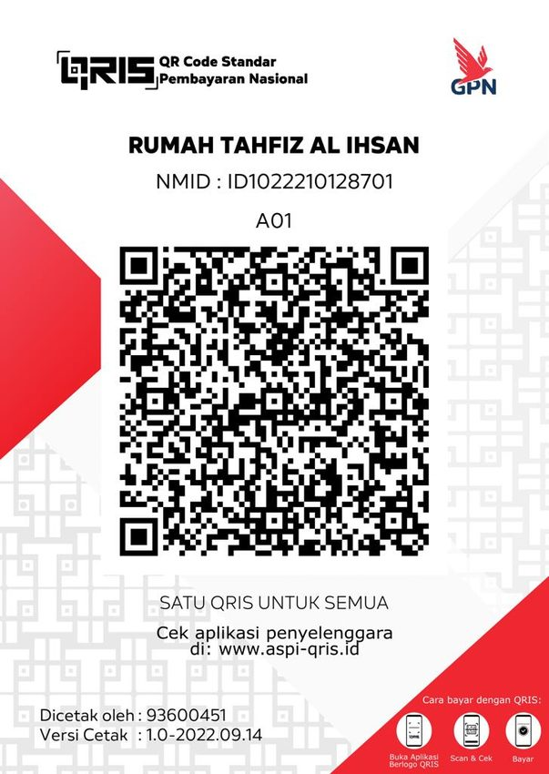

Laporan Keuangan Masjid Al Ihsan
Ringkasan publik keuangan operasional Masjid Al Ihsan Kapuih.
Kebutuhan Operasional Bulan Ini
Rekap 6 Bulan Terakhir
| Periode | Pemasukan | Pengeluaran | Selisih |
|---|
Transaksi Periode Aktif
Tampilan publik hanya memuat informasi transaksi yang diperlukan untuk transparansi jamaah. Dokumen administrasi pengurus tetap privat.
| Tanggal | Uraian | Kategori | Masuk | Keluar |
|---|
Catatan
Posisi dana dapat mencakup saldo awal dan penyesuaian antarprogram. Pemasukan dan pengeluaran operasional mengikuti pencatatan Kas Umum pada sistem keuangan Masjid Al Ihsan.
Ingin Turut Menjadi Bagian dari Kebaikan Ini?
Setiap infak dan sedekah yang dititipkan melalui Masjid Al Ihsan Kapuih membantu menjaga kegiatan ibadah, pendidikan, pembinaan umat, serta berbagai program kemaslahatan masyarakat agar terus berjalan dan berkembang.

Sekecil apa pun kontribusinya, insyaAllah sangat berarti dan menjadi bagian dari ikhtiar bersama untuk memakmurkan masjid dan menebar manfaat bagi umat.
Jazakumullahu khairan. Semoga Allah menerima setiap amal kebaikan, melapangkan rezeki, dan membalasnya dengan pahala terbaik.